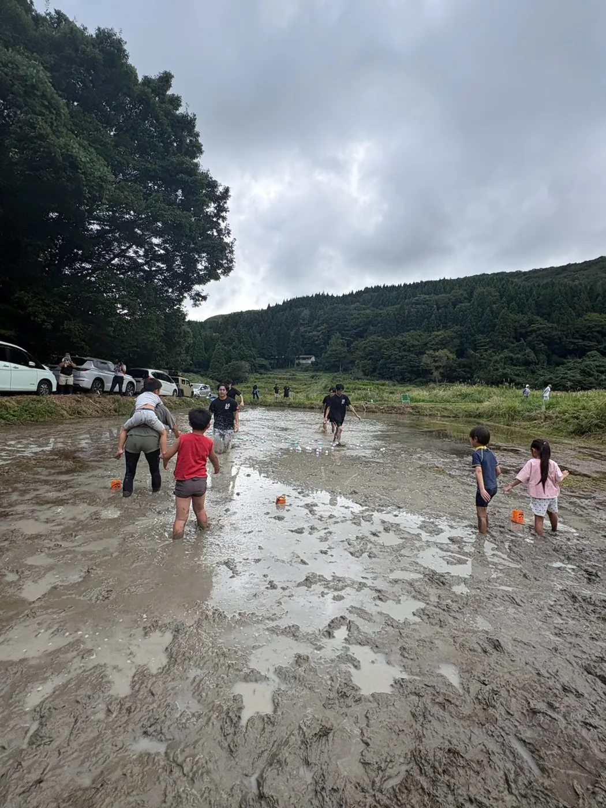

耕作放棄地
以前は耕作していたものの、一定期間作物を作らず、今後も耕作する意思がない土地を示す言葉です。
土地を知るLEARN THE LAND
使われなくなった農地のこと、能登で起きていること、そして私たちが泥ん子運動会を始めた理由を順番にまとめました。

現地から考えるFROM THE LAND
数字や制度だけではなく、実際の農地と、そこで活動してきた人の姿から企画を考えています。


言葉からBASIC WORDS
似た言葉を混同しないよう、基本の意味を整理しました。
以前は耕作していたものの、一定期間作物を作らず、今後も耕作する意思がない土地を示す言葉です。
現に耕作されておらず、通常の農作業では作物の栽培が難しいと判断された農地です。
耕作されていない、または利用が著しく不十分な農地を制度上確認する言葉です。
出典：農林水産省「農業資源調査の概要」「用語の解説」「荒廃農地の発生防止・解消等」をもとに整理しています。
数字からNUMBERS
全国の荒廃農地は令和6年度で25.7万ha。そのうち9.8万haは再生利用が可能とされ、同年度には2.4万haが新たに発生しました。
出典：農林水産省「令和6年度の荒廃農地面積」（令和7年3月31日現在）
なぜ増える？WHY IT HAPPENS
人のこと、暮らしのこと、土地の条件、災害。いくつもの事情が重なります。
農業を続ける人や、引き継ぐ人が見つかりにくくなっています。
水路や畦畔などを地域で一緒に管理することも難しくなります。
狭い区画や排水、傾斜などが、作業を続ける負担になることがあります。
農地や水路、農道の被害が、もう一度農業を始める大きな壁になります。
私たちにできることOUR ROLE
農地や水路の本格的な復旧は、農業者や行政、専門の方々が進めています。私たちはその代わりをするのではなく、まず土地を知る人、能登を訪れる人、地域の方と話す人を増やすところから始めます。
NOTO Re:Bloomの考え方OUR IDEA
「能登に来た」「田んぼに入った」「地域の人と話した」という経験を、一日で終わらせず、その次の関わりへつなげたいと考えています。
実際に人が入ったことで、安全面や排水、動線など、次に考えるべきことが見えてきました。
「支援だから」だけではなく、「楽しそうだから行ってみたい」という入口を、9月20日の実践としてつくりました。
一緒に遊んだり休んだりする中で、地域・参加者・学生の間に自然な会話が生まれる時間になりました。
2026年の実施で分かったことと地域とのつながりを残し、次の耕作放棄地での活動へつなげます。
9月20日の実施結果は、開催レポートにまとめています。
2026.9.20OUR FIRST DAY
約20m×50m、約1,000㎡の田んぼをお借りし、9月20日にここで泥ん子運動会を開催しました。今回使用した土地は、2027年春にレンコン栽培へ活用される予定です。
